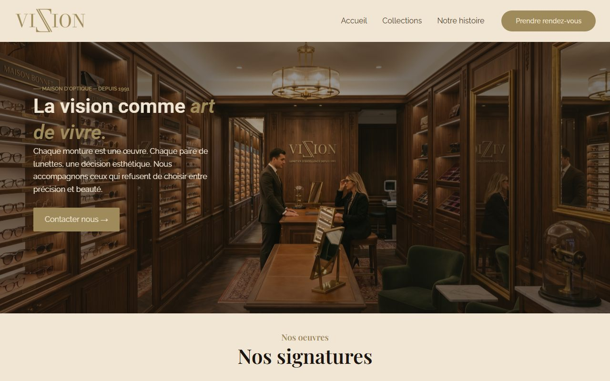
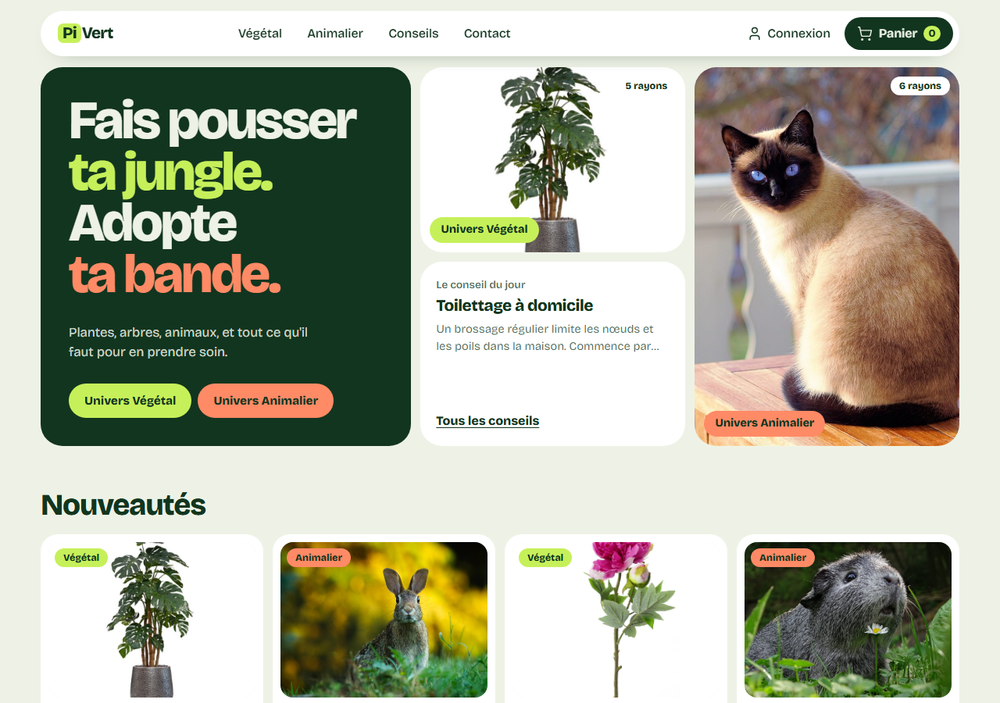
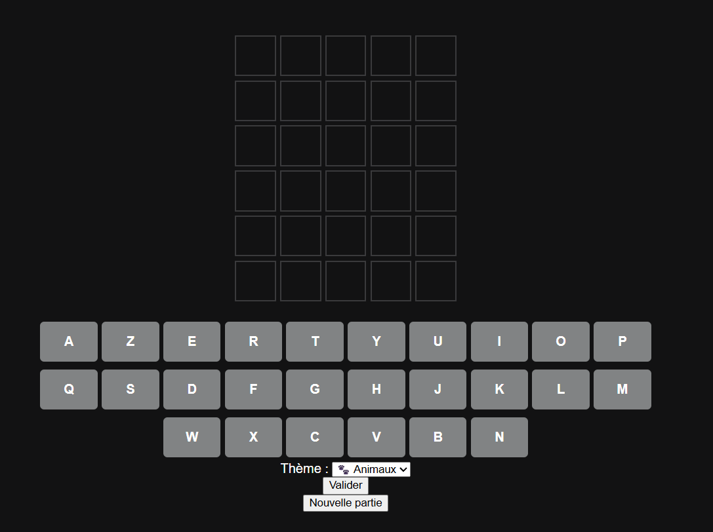
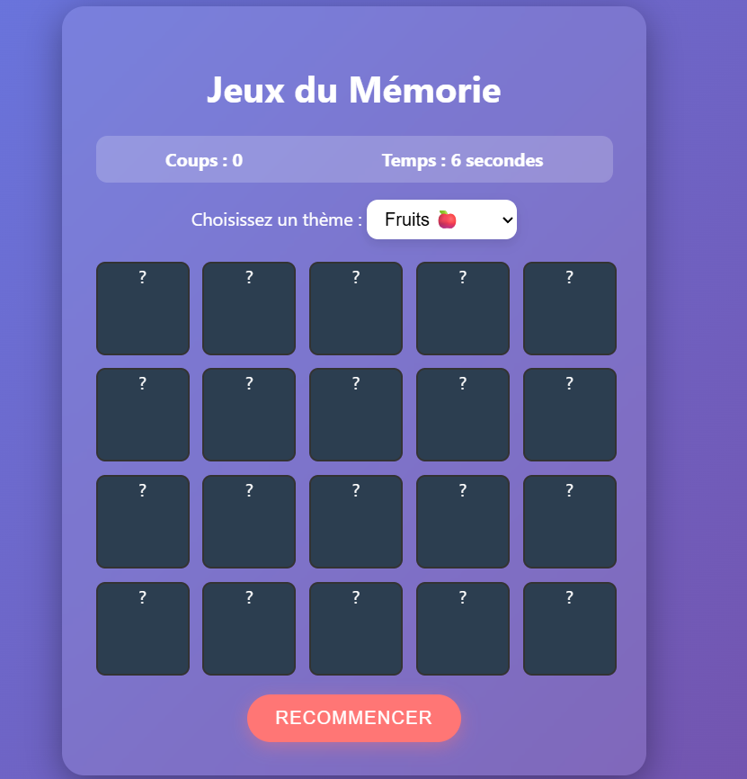

Mes_projets_
> viZion_

- Contexte
- Site vitrine de viZion, maison d'optique fictive (projet universitaire) : collections de montures, histoire de la maison, prise de rendez-vous.
- Mon rôle
- Intégration sous WordPress, personnalisation de l'interface en CSS, création des éléments graphiques et adaptation au mobile.
- Technos
- WordPress, CSS, design graphique
> PiVert_

- Contexte
- PiVert faunes & flores, site e-commerce de plantes et d'animaux. Projet de 1re année de BUT MMI (SAÉ 203), réalisé en binôme. En 2026, j'ai refait tout le front et l'administration : une seule identité visuelle, gabarits Twig, site responsive et sécurisé. C'est cette version qui est en ligne.
- Mon rôle
- Toute la partie technique : structure PHP du site, base de données, panier, connexion et inscription, espace d'administration, page Univers Végétal et mise en ligne. Mon binôme a réalisé l'accueil et la page Univers Animal.
- Technos
- PHP, MySQL, JavaScript, Twig, hébergement Hostinger
- Défi
- Une seule pop-up produit, générique : au clic, elle se remplit en JavaScript avec les informations du produit choisi, au lieu d'écrire une pop-up par produit.
> Wordle_

- Contexte
- Jeu de lettres : trouver le mot caché en 6 essais, sur un thème au choix (animaux, pays, sports).
- Mon rôle
- Développement complet en JavaScript natif, sans bibliothèque.
- Points clés
- Dictionnaire de validation chargé en JSON (fetch + Set) pour refuser les mots qui n'existent pas. Clavier qui se colore au fil des essais. Jouable au clavier, à la souris et au doigt.
- Défi
- Colorer juste les lettres en double : l'algorithme fait deux passages, d'abord les lettres bien placées, puis celles présentes ailleurs dans le mot.
> Memory_

- Contexte
- Jeu de mémoire : retrouver toutes les paires le plus vite possible, seul ou à deux.
- Mon rôle
- Développement complet en JavaScript natif, du plateau de cartes à l'écran de victoire.
- Points clés
- 7 thèmes de cartes, dont un thème illustré maison. Difficulté réglable par nombre de paires, avec une grille qui s'adapte. Chronomètre et compteur de coups. Mode deux joueurs en local.
- Défi
- Bloquer les clics pendant la vérification d'une paire, et passer la main au bon joueur en mode deux joueurs.